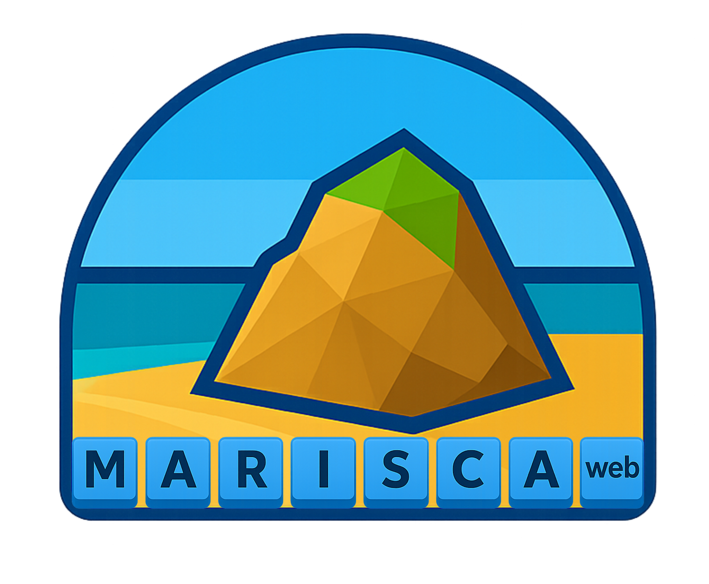

La franja intermareal es un ecosistema dinámico donde factores como mareas, clima, temperatura y salinidad influyen en las especies que lo habitan. Para gestionar eficazmente la pesca en estas zonas, como es el caso del marisqueo a pie, se necesitan datos ambientales de alta resolución espacial y temporal. Sin embargo, estos datos se encuentran dispersos y son difíciles de integrar.
MARISCAWEB ofrece una tecnología innovadora ya que desarrollará nuevas herramientas de software para monitorizar el medio intermareal, mejorando el conocimiento científico y la toma de decisiones respecto a la gestión de la pesca.
El proyecto contempla el desarrollo de dos plataformas digitales, utilizando enfoques participativos con el sector de pesca costera artesanal:
elaborará una aplicación web destinada a usuarios vinculados con la pesca en el medio intermareal (cofradías y comunidades de mariscadores/a), gestores de la administración y el público en general.
Desarrollará programas en código abierto aplicable a la investigación del medio intermareal y destinado principalmente a ecólogos marinos, científicos y analistas.
Para llevar a cabo estos objetivos se establecerá un sistema robusto para adquirir, procesar y adaptar datos de alta resolución provenientes de geoportales, sensores in situ y sensores remotos mediante vehículo aéreo no tripulado y satélites, asegurando su calidad y compatibilidad para su posterior integración y análisis. Además, se desarrollarán acciones de comunicación y formación con los sectores correspondientes.
Los resultados del proyecto serán aplicables a toda la costa española, pero examinará con más detalle determinadas áreas de Galicia, una región afectada por la caída en las capturas de marisco. MARISCAWEB ofrecerá soluciones para entender mejor estos ecosistemas y fortalecer la sostenibilidad y resiliencia de las comunidades costeras.
The intertidal zone is a dynamic ecosystem where factors such as tides, weather conditions, temperature, and salinity strongly influence the species that inhabit it. To effectively manage fisheries in these areas—such as hand-gathered shellfishing—high spatial and temporal resolution environmental data are required. However, these data are currently fragmented and difficult to integrate.
In this context, MARISCAWEB provides an innovative technological solution by developing new software tools to monitor the intertidal environment, thereby improving both scientific knowledge and decision-making in fisheries management.
The project includes the development of two digital platforms, using participatory approaches involving the artisanal coastal fishing sector:
A web application designed for users linked to intertidal fisheries (fishing guilds and shellfish gatherers’ communities), public administration managers, and the general public.
Open-source programs for the study of the intertidal environment, primarily aimed at marine ecologists, researchers, and data analysts.
To achieve these objectives, a robust system will be established to acquire, process, and adapt high-resolution data from geoportals, in situ sensors, and remote sensing platforms (including unmanned aerial vehicles and satellites), ensuring data quality and interoperability for subsequent integration and analysis. In addition, communication and training activities will be developed with the relevant stakeholders.
The project results will be applicable along the entire Spanish coastline, although specific areas in Galicia—where shellfish catches have declined—will be studied in greater detail. MARISCAWEB will provide solutions to improve the understanding of these ecosystems and to strengthen the sustainability and resilience of coastal communities.
Este proyecto se desarrolla con la colaboración de la Fundación Biodiversidad del Ministerio para la Transición Ecológica y el Reto Demográfico, a través del Programa Pleamar, y se cofinancia por la Unión Europea por el FEMPA (Fondo Europeo Marítimo, de Pesca y de Acuicultura).